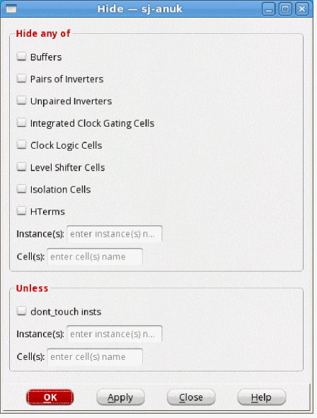
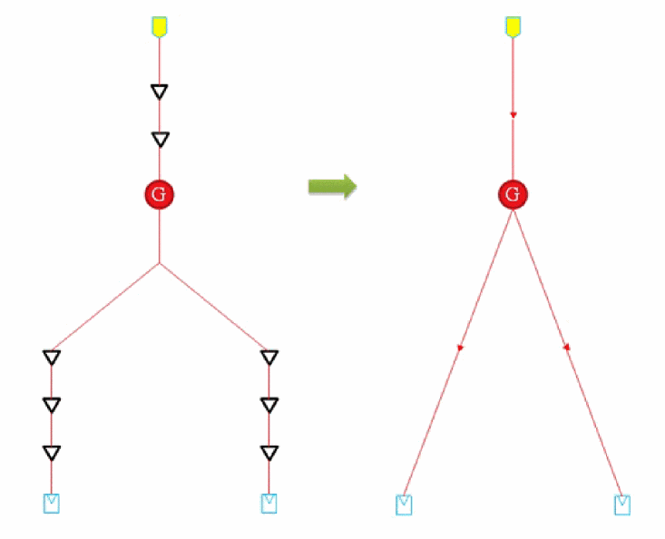
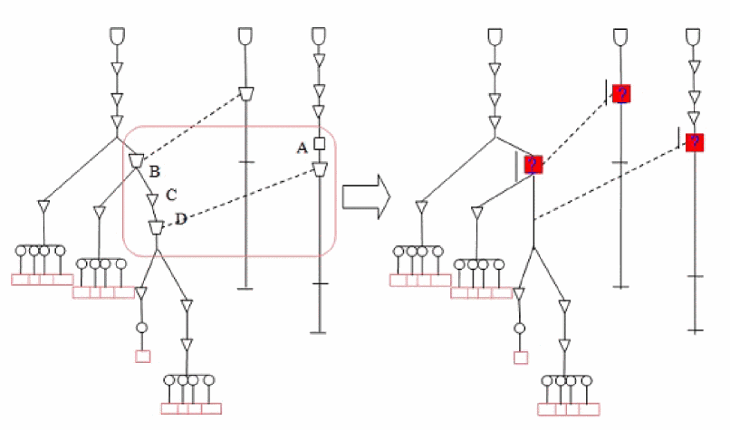
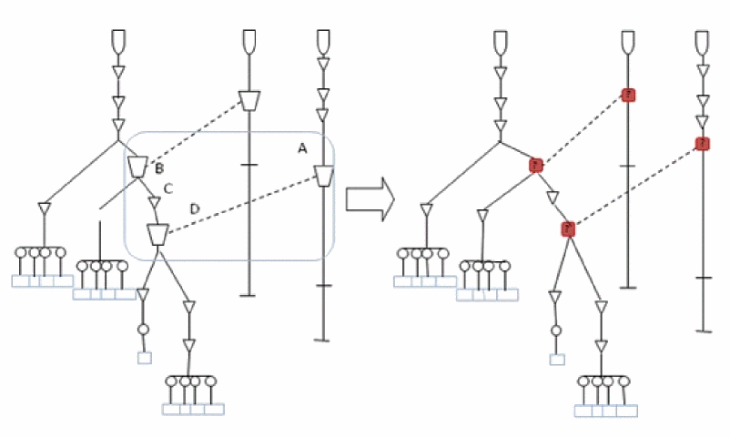
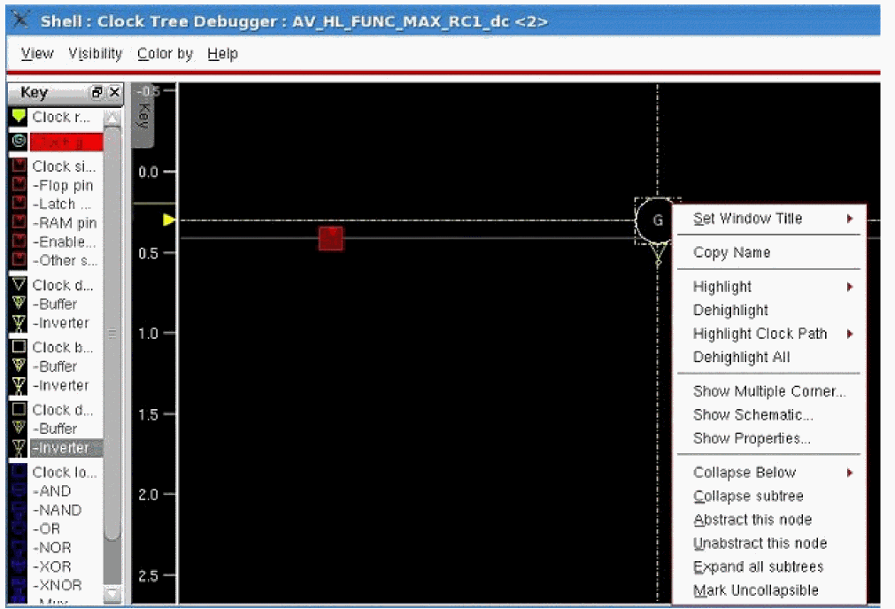
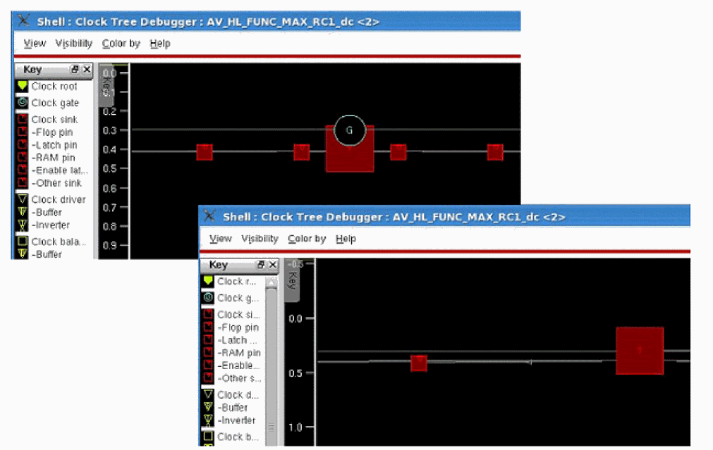

The Hide Function in CTD
Use the Hide form to specify the buffers, inverters, instances, and cells that you want to hide in the CTD displays.
Choose - CCOpt Clock Tree Debugger - View - Simplify - Hide

Hiding Buffers and Inverters
The figure below illustrates the behavior of only hiding buffers and inverters of clock trees. When you specify only the Buffers or Pairs of Inverters or Unpaired Inverters options in the Hide form, then all cascaded logic will be turned into one small icon, which will be a small red triangle. This is shown in the figure below.

Hiding Clock Logic Cells
Clock logic cells, such as clock gate cells, can be specified for hiding. If the cells, which are connected directly, contain any clock logic (excluding buffers and inverters), then they are collapsed as large red square icons in the Clock Tree Viewer. The red square has a question mark "?", in the center, which indicates that the content is unknown or complex. This size of the red square icon is larger than the symbol shape of the normal clock objects. This square icon is placed at the earliest point at which it is encountered in each clock tree.
In the sample scenario 1 shown below, the points A, B, C, and D are user-specified points. The points B, C, and D are on the same clock tree so the square icon is placed only on point B, which is encountered first. The vertical line below the hidden logic is used to show the total delay across the logic, and connect offshoots in and out at the appropriate time offsets.

Now consider another scenario in which point C is not specified by the user for hiding. In this case, the hide will be as shown below. The red square icon will be placed on both points B and D.

-
To view the hidden objects again, select the Show unhidden option in the Simplify submenu of the View menu.
-
The hide function also allows you to hide and unhide selected nodes by clicking options, Abstract this node and Unabstract this node, provided in the content menu of the Clock Tree Viewer.

Below is a screenshot showing the hiding of a selected clock gate.

Return to top